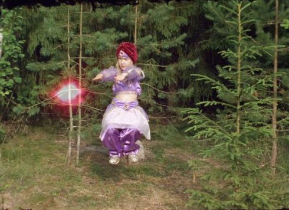

Saladdin Castique

Anssi Kasitonni
|
Finnland
2018
|
Dienstag 15 okt | 20.30 | werkstattkino | short film
night
Es wird märchenhaft. Ein Mann sammelt Beeren im Wald. Stattdessen findet er eine leere French-Dressing-Flasche, aus der ein Geist entsteigt. Wie es so ist: Der Mann hat drei Wünsche frei. Ihm kommt nur das Übliche in den Sinn, Gold und so, aber findet dafür nicht die richtigen Worte, alles geht recht vulgär zu. Dem Mann wird eine Lektion erteilt.
Anssi Kasitonni geb. 1978. Der Skateboarder und preisgekrönte Künstler aus Sahalahti, Finnland, ist Musiker, Zeichner und Bildhauer. Seine Fans lieben die Filme, die er auf seinem eigenen Hof dreht. Sie beschäftigen sich mit uralten Fragen zu Moral, Liebe, Tod. 2011 erhielt er den Ars Fennica Award. |
Filme Planet of Sexes 2012 | The Wapiti 2014 | Finnish Midsummer 2169 2016 | Saladdin Castique 2018 |